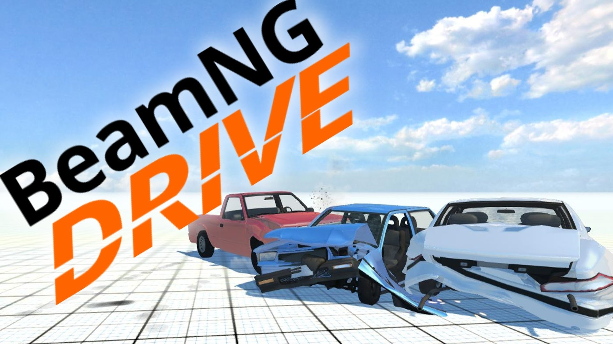

BeamNG.drive

PLATFORMY
PC
------
------
------

Wiecej Zdj.
Sandboksowa symulacja jazdy samochodem. BeamNG.drive jest debiutanckim dziełem niezależnego studia BeamNG, zrealizowanym jako zwieńczenie trwających kilka lat prac nad realistycznym silnikiem fizyki.
BeamNG.drive to debiutancka produkcja niewielkiego studia BeamNG. Od początku swego istnienia pracowało ono nad zaawansowanym silnikiem fizycznym i dopiero po ukończeniu prac nad nim postanowiono stworzyć grę, która będzie skupiała się na jego wykorzystaniu. Dlatego BeamNG.drive oferuje sandboksowy model rozgrywki, w którym swobodnie przemierzamy zróżnicowane lokacje o otwartej strukturze, oddając się przyjemności płynącej z jazdy i eksploracji.
Robimy to za kierownicą jednego ze stosunkowo pokaźnej puli pojazdów, w pełni podatnych na uszkodzenia i szeroki zakres modyfikacji. Za to, by taka rozgrywka szybko się nie znudziła, w dużej mierze odpowiadają sami gracze. Deweloper dołącza bowiem do gry rozbudowany edytor, który umożliwia tworzenie własnych map i pojazdów. Dostępna jest też opcja kreowania misji i wyzwań, co pozwala wzbogacać produkcję o swoiste kampanie fabularne. Co więcej, sami twórcy nieustannie rozwijają swoje dzieło, dodając do niego nowe obszary, wehikuły czy tryby rozgrywki, takie jak rajdy, wyścigi uliczne, zadania kurierskie, pokazy kaskaderskie i pościgi policyjne.
Najistotniejszą częścią omawianego tytułu jest jednak wspomniany silnik fizyczny. BeamNG stworzyło niezwykle zaawansowaną technologię, która, oprócz bardzo realistycznego modelu zachowania się samochodu na drodze, oferuje przede wszystkim system zniszczeń na niespotykanym wcześniej poziomie. Gięcie blachy i odpadanie części jest tutaj generowane w czasie rzeczywistym, a efekty kolizji nieznacznie odbiegają od tego, co możemy oglądać w testach zderzeniowych prawdziwych samochodów. Przy takim zaawansowaniu fizyki w grze jej oprawa graficzna, generowana przez silnik Torque3D, mimo stosunkowego ubóstwa detali i efektów, może zejść na dalszy plan.
WYMAGANIA
Minimalne:
Procesor: Desktop Intel Core i3. Karta graficzna: GTX 550 TI lub lepsza. Pamięć RAM: 4 GB. DirectX: wersja 11. Wolne miejsce na dysku: 5 GB. System operacyjny: Windows 7.
Rekomendowane:
Procesor: Intel Core i5/i7 lub AMD 6 rdzeniowy lub lepszy. Karta graficzna: GTX 780 lub lepsza. Pamięć RAM: 8 GB. DirectX: wersja 11. Wolne miejsce na dysku: 5 GB. System operacyjny: Windows 10 64 bitowy.
Procesor: Intel Core i5/i7 lub AMD 6 rdzeniowy lub lepszy. Karta graficzna: GTX 780 lub lepsza. Pamięć RAM: 8 GB. DirectX: wersja 11. Wolne miejsce na dysku: 5 GB. System operacyjny: Windows 10 64 bitowy.
Minimalne:
Procesor: Desktop Intel Core i3. Karta graficzna: GTX 550 TI lub lepsza. Pamięć RAM: 4 GB. DirectX: wersja 11. Wolne miejsce na dysku: 5 GB. System operacyjny: Windows 7.
PEGI
Dla każdego
Dla każdego
Język Gry

EN napisy i dialogi